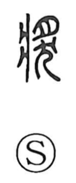

奨

Uncategorized
Kun: susumeru | On: shou
to encourage ・ to recommend ・ award ・ prize ・ reward ・ to help
Explanation
Shirakawa reads this as a phono-semantic graph. Its original form 獎 takes 將 (将) as the phonetic, and that element itself depicts a hand (寸) presenting a portion of meat—drawn like 夕 with an added stroke reminiscent of the top of 炙—set upon a legged stand (爿). The lower part written as 大 in the current form goes back to 犬, indicating a dog offered in sacrifice. Altogether the character portrays the ritual presentation of sacrificial meat to the gods and the attendant worship. From this image of making an offering, the meaning broadened to the general sense of proffering or advancing something—hence to recommend and encourage—and also to help.